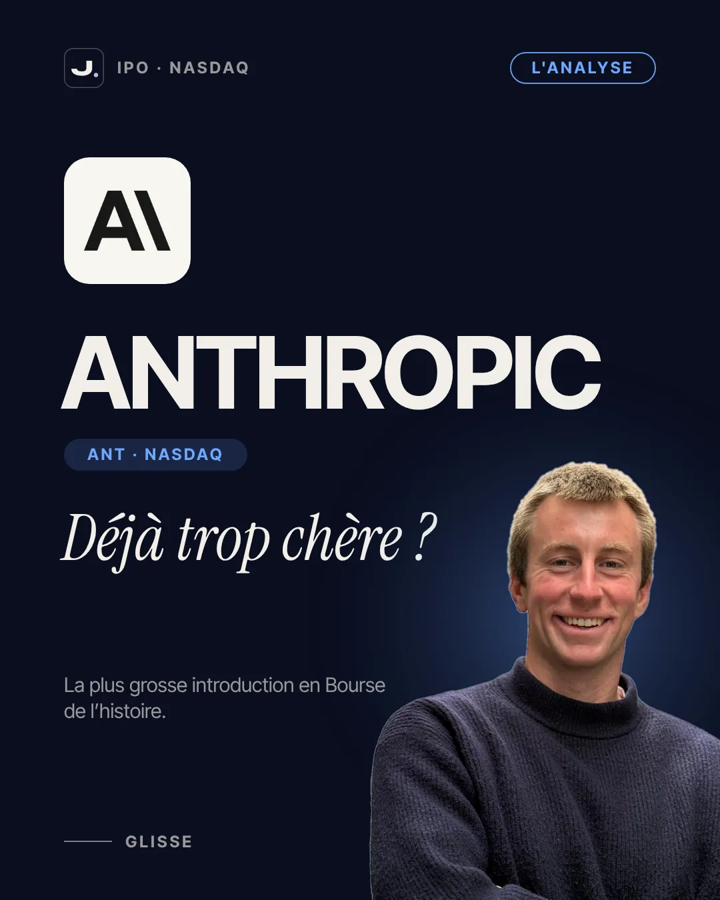
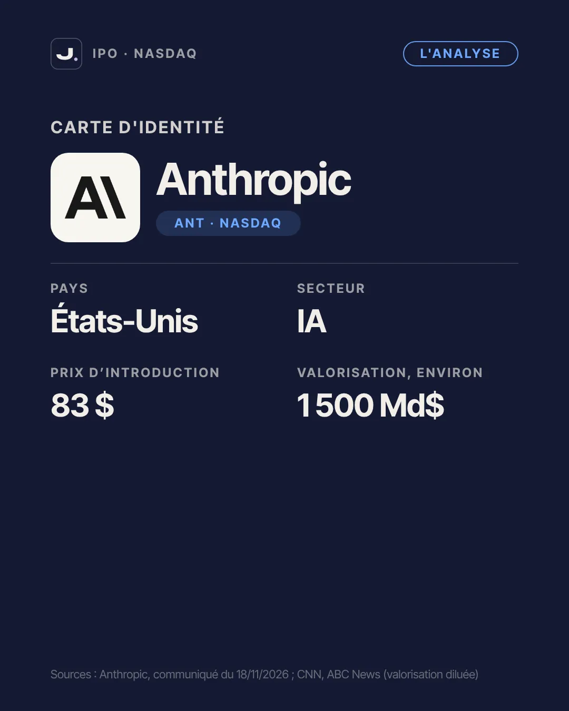
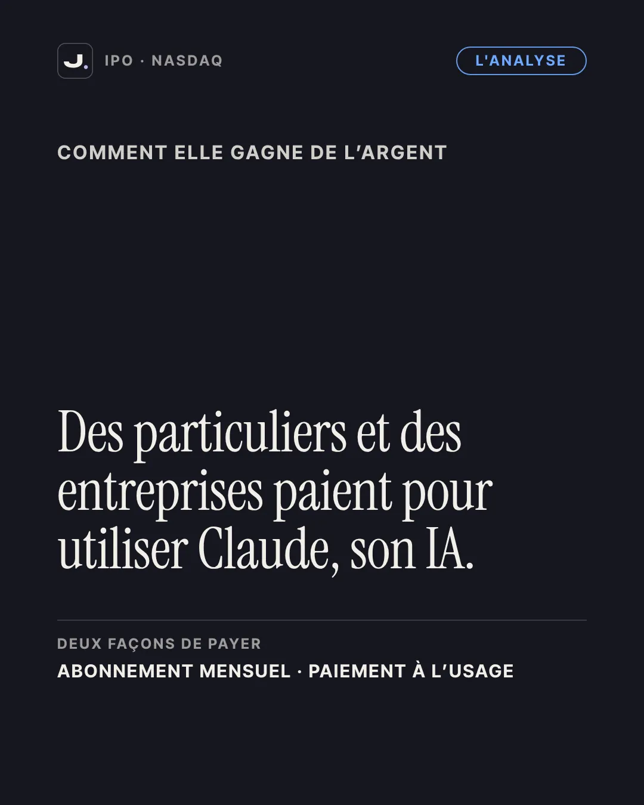
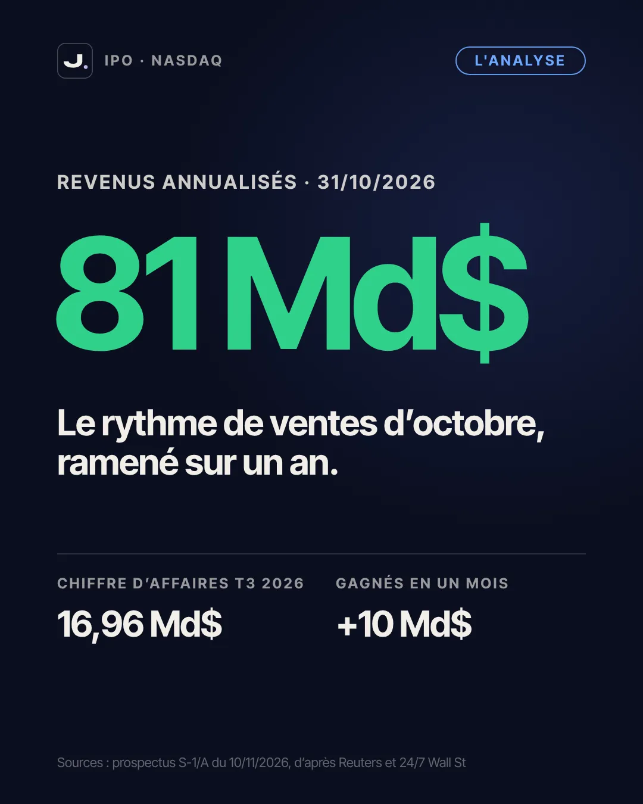
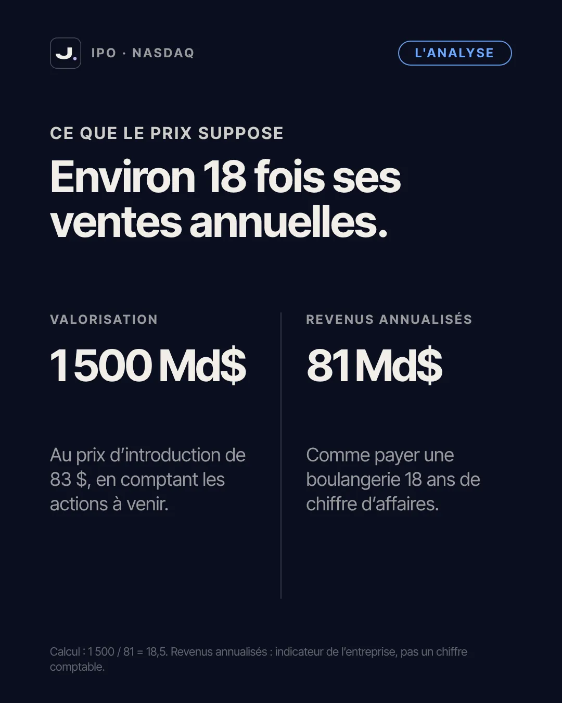
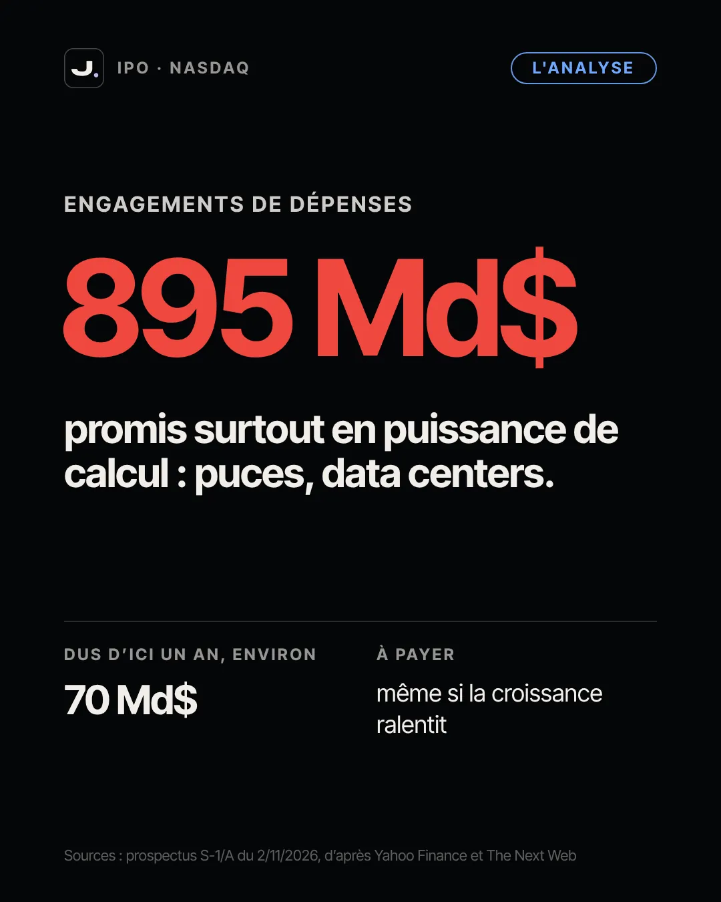
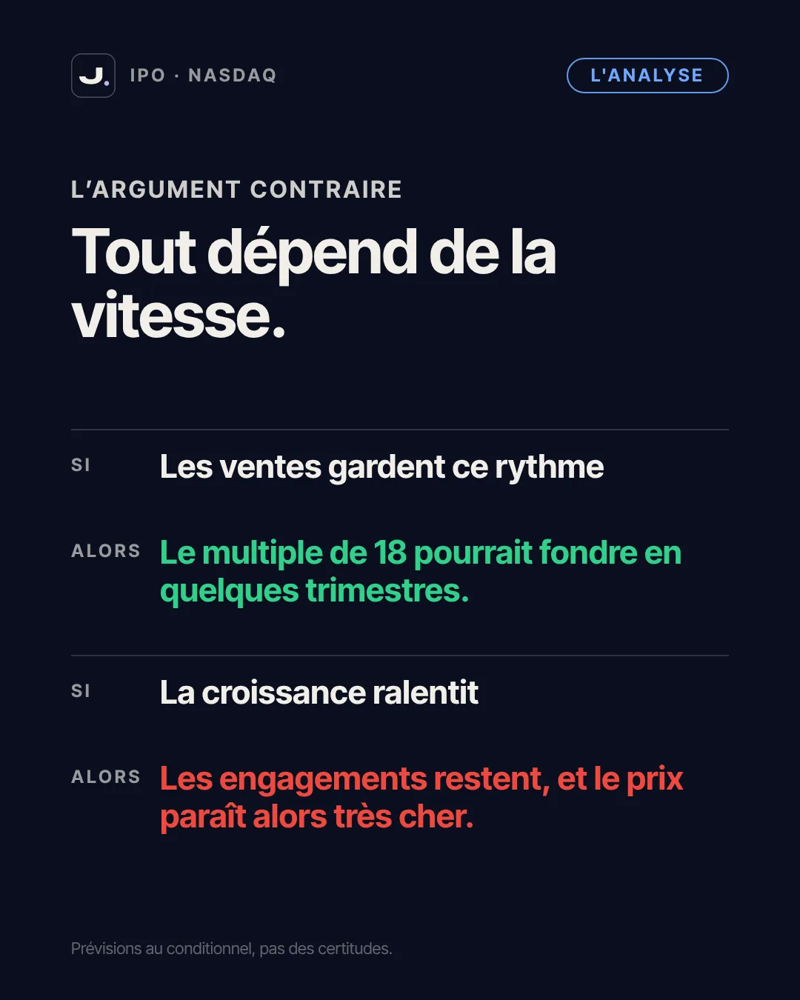
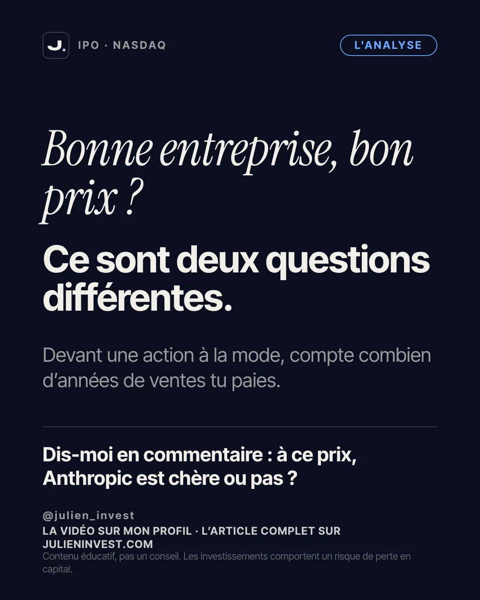

Cet article approfondit mon carrousel et ma vidéo de la semaine. Si tu veux d'abord revoir les bases pour lire une entreprise cotée, commence par mon guide sur l'analyse fondamentale, puis reviens ici.
Transparence : ce contenu a été préparé avec l'aide de Claude, l'intelligence artificielle développée par Anthropic, l'entreprise analysée ici. J'ai relu chaque chiffre et l'avis final est le mien. Garde ce point en tête en lisant.

- Ce qui s'est passé : la plus grosse introduction en Bourse de l'histoire
- Comment Anthropic gagne de l'argent
- Les deux chiffres qui comptent : revenus annualisés et chiffre d'affaires
- Ce que le prix suppose : environ 18 fois les ventes
- Le risque principal : la facture de la puissance de calcul
- L'argument contraire le plus sérieux
- Mon avis : une croissance hors norme, un prix qui suppose déjà un succès presque parfait
- La méthode pour analyser une introduction en Bourse
- Passer à l'action
- Le carrousel en images
- Questions fréquentes
Ce qui s'est passé : la plus grosse introduction en Bourse de l'histoire
Le 18 novembre 2026, Anthropic a fixé le prix de son introduction en Bourse à 83 dollars par action. C'est nettement au dessus de la fourchette annoncée au début de sa tournée auprès des investisseurs, qui allait de 70 à 78 dollars. Quand une entreprise relève son prix au dernier moment, c'est en général que la demande des grands investisseurs dépasse largement l'offre.
Au total, 980 millions d'actions ont été vendues, dont un peu plus de 956 millions par Anthropic elle-même et le reste par des actionnaires existants. Au prix de 83 dollars, l'opération représente environ 81 milliards de dollars, ce qui en fait la plus grosse introduction en Bourse jamais réalisée, devant celle de SpaceX en juin 2026. Les actions sont cotées au Nasdaq depuis le 19 novembre 2026, sous le symbole ANT.
Une introduction en Bourse, c'est le jour où une entreprise vend ses actions au public pour la première fois. Avant, seuls les fondateurs, les salariés et les fonds qui avaient investi pouvaient en détenir. Après, n'importe qui peut en acheter, au prix fixé chaque seconde par le marché.
Comment Anthropic gagne de l'argent
Anthropic gagne de l'argent quand des particuliers et des entreprises paient pour utiliser Claude, son intelligence artificielle, concurrente de ChatGPT. Il y a deux grandes façons de payer.
- L'abonnement : un particulier ou une équipe paie chaque mois pour utiliser Claude.
- Le paiement à l'usage : une entreprise branche Claude dans ses propres logiciels et paie selon la quantité de travail demandée à l'IA.
Le modèle a un avantage évident : plus les entreprises intègrent l'IA dans leur travail quotidien, plus elles consomment, et plus les revenus grimpent sans qu'Anthropic ait besoin de signer un nouveau client. Mais il a aussi un coût très lourd, que l'on verra plus bas : faire tourner ces modèles demande une puissance de calcul gigantesque, des puces et des centres de données qu'il faut payer.
Les deux chiffres qui comptent : revenus annualisés et chiffre d'affaires
Le chiffre mis en avant par Anthropic est celui de ses revenus annualisés : environ 81 milliards de dollars au 31 octobre 2026, selon son prospectus mis à jour le 10 novembre, soit environ 10 milliards de plus qu'un mois plus tôt. C'est spectaculaire. Mais il faut comprendre ce que ce chiffre mesure.
Les revenus annualisés, c'est le rythme de ventes du moment ramené sur une année. Selon le prospectus, Anthropic prend les frais payés à l'usage sur les 28 derniers jours et les multiplie par 13, puis ajoute les abonnements du mois multipliés par 12. En clair, c'est la réponse à la question : si l'entreprise vendait toute l'année au rythme de fin octobre, combien ferait-elle ? Ce n'est pas un chiffre comptable, et l'entreprise elle-même précise qu'il ne remplace pas son chiffre d'affaires officiel.
Le chiffre comptable, lui, est le chiffre d'affaires du troisième trimestre 2026 : environ 16,96 milliards de dollars, selon les données du prospectus reprises par la presse financière. Multiplié par quatre, il donne environ 67,8 milliards par an. L'écart avec les 81 milliards s'explique par la croissance très rapide de l'entreprise : le rythme d'octobre est plus élevé que la moyenne de l'été.
Retiens la différence : le chiffre d'affaires dit ce qui a été vendu, les revenus annualisés disent le rythme actuel. Les deux sont utiles, mais le second est par nature plus flatteur quand une entreprise accélère, et plus trompeur si la croissance s'arrête.
Ce que le prix suppose : environ 18 fois les ventes
Au prix d'introduction de 83 dollars, Anthropic est valorisée environ 1 500 milliards de dollars, selon CNN, ABC News et CBS News. Ce chiffre est dit « entièrement dilué » : il compte aussi les actions qui pourront être créées plus tard, par exemple les options données aux salariés. Sans ces actions futures, Reuters estimait le 11 novembre, au haut de l'ancienne fourchette, une valeur plus proche de 1 000 milliards. La valorisation diluée est la plus prudente, parce que ces actions finiront un jour par exister.
Le calcul
On divise la valorisation par les revenus annualisés : 1 500 divisé par 81 donne environ 18,5. Autrement dit, la Bourse paie Anthropic environ 18 fois ses ventes annuelles au rythme actuel. Si l'on prend plutôt le chiffre d'affaires comptable du troisième trimestre, multiplié par quatre, on arrive à environ 22 fois.
L'image
Imagine qu'on te propose de racheter une boulangerie. Elle vend pour 100 000 euros de pain par an. Le vendeur en demande 1,8 million, soit 18 années de ventes. Attention, je parle bien de ventes, pas de bénéfices : il faut encore payer la farine, les salaires, le loyer et le four. Pour que ce prix ait du sens, il faut que la boulangerie vende beaucoup plus dans les années qui viennent, et qu'elle finisse par dégager de gros bénéfices.
C'est exactement ce que suppose le prix d'Anthropic : une croissance qui continue très fort pendant des années, et des marges qui deviennent élevées une fois les investissements passés. Ce n'est pas impossible. Mais c'est beaucoup demander, et le prix ne laisse pas beaucoup de place à l'imprévu.
Le risque principal : la facture de la puissance de calcul
Le chiffre qui m'a le plus frappé dans le prospectus n'est pas un revenu, c'est une dépense. Selon le prospectus mis à jour le 2 novembre, repris par Yahoo Finance et The Next Web, Anthropic a pris environ 895 milliards de dollars d'engagements d'achats et de locations, presque entièrement liés à la puissance de calcul et aux infrastructures : des puces, des serveurs, des centres de données. Environ 70 milliards sont dus d'ici un an, selon plusieurs analyses du document.
Un engagement, c'est une promesse de payer. Si la croissance continue, ces capacités serviront à vendre encore plus. Mais si la croissance ralentit, la facture, elle, reste. C'est comme une boulangerie qui aurait signé pour dix ans de loyer et de livraisons de farine en prévoyant de tripler ses ventes : si les clients ne viennent pas, les factures arrivent quand même.
Autre point de vigilance, selon la presse financière qui a lu le prospectus : l'entreprise a affiché une perte d'exploitation au troisième trimestre 2026, d'environ 567 millions de dollars, après un bénéfice d'exploitation au deuxième trimestre. Autrement dit, elle n'est pas encore régulièrement rentable sur son activité.
Enfin, il y a le risque propre au premier jour de cotation. En juin 2026, SpaceX avait été introduite à 135 dollars, avait grimpé bien au dessus, puis était retombée à 123 dollars fin juillet, sous son prix d'introduction. Le premier jour, on achète souvent une histoire autant que des chiffres.
L'argument contraire le plus sérieux
Il faut le présenter honnêtement, parce qu'il est fort. Les revenus annualisés d'Anthropic ont pris environ 10 milliards de dollars en un seul mois, entre fin septembre et fin octobre 2026. C'est une vitesse de croissance rarissime pour une entreprise de cette taille.
Or un multiple de valorisation n'est qu'une photo. Si les ventes continuaient à grimper à ce rythme, le multiple de 18 pourrait fondre en quelques trimestres : à valorisation égale, des ventes deux fois plus élevées feraient tomber le multiple à environ 9. C'est le raisonnement des investisseurs qui ont acheté à 83 dollars : ils ne paient pas les ventes d'aujourd'hui, ils paient celles de demain.
Ce scénario est possible. Mais ce n'est qu'un scénario, au conditionnel, et personne ne sait combien de temps une telle accélération peut durer, ni comment réagiront les concurrents.
Mon avis : une croissance hors norme, un prix qui suppose déjà un succès presque parfait
À mon avis, Anthropic grandit très vite, mais à environ 1 500 milliards de dollars, la Bourse suppose déjà un succès presque parfait. Le risque principal n'est pas l'activité de l'entreprise, c'est le prix payé pour elle. Une bonne entreprise et une action bon marché, ce sont deux questions différentes.
Ce qui me ferait changer d'avis : voir Anthropic dégager des bénéfices d'exploitation réguliers, trimestre après trimestre, en plus de sa croissance. Ou bien un cours nettement plus bas pour la même croissance. Dans les deux cas, le prix supposerait moins de miracles.
Je le répète : c'est une analyse, pas une recommandation. Je ne te dis ni d'acheter ni de vendre cette action, et je ne donne aucun objectif de cours. Mon but est que tu saches lire ce que tu paies.
La méthode pour analyser une introduction en Bourse
Anthropic ne sera pas la dernière grande introduction en Bourse. Voici la méthode que j'applique, et que tu peux reprendre pour la prochaine.
Étape 1 : lire le prospectus, pas les gros titres
Le prospectus est le document officiel déposé auprès du gendarme de la Bourse américain. Tout y est : chiffre d'affaires, pertes, engagements, risques. Il est gratuit et public.
Étape 2 : séparer chiffres comptables et indicateurs maison
Revenus annualisés, clients actifs, utilisateurs : ces indicateurs sont choisis par l'entreprise. Ils sont utiles, mais compare toujours avec le chiffre d'affaires comptable.
Étape 3 : calculer combien d'années de ventes tu paies
Divise la valorisation par les ventes annuelles. Plus le chiffre est élevé, plus la croissance future doit être forte pour justifier le prix.
Étape 4 : regarder les engagements et les pertes
Une entreprise qui a promis de grosses dépenses doit continuer à croître pour les payer. Lis la partie sur les engagements et les résultats d'exploitation.
Étape 5 : te souvenir que rien ne t'oblige à décider le premier jour
Le jour de l'introduction, ce sont les vendeurs qui fixent le prix. L'euphorie du premier jour n'est pas une information sur la qualité de l'entreprise.
Les erreurs fréquentes
- Confondre une entreprise célèbre avec une bonne affaire.
- Regarder la hausse du premier jour comme une preuve.
- Comparer la valorisation au bénéfice alors qu'il n'y en a pas encore de régulier.
- Oublier que les actions américaines ne peuvent pas aller dans un PEA : il faut un compte titres ordinaire, avec sa fiscalité propre, que je détaille dans mon comparatif PEA ou compte titres.
Les limites de cette analyse
Le site officiel de la SEC n'était pas accessible depuis mon outil de vérification : les chiffres financiers du prospectus viennent donc de médias financiers concordants (Reuters, CNN, Yahoo Finance, The Next Web), le prix et le nombre d'actions viennent du communiqué officiel d'Anthropic. Le cours évolue chaque seconde depuis le 19 novembre : la valorisation de marché peut déjà être très différente de celle du prix d'introduction. Et si tu préfères ne pas choisir les actions une à une, mon article sur le stock picking t'aidera à peser le pour et le contre.
Passer à l'action
Avant de t'intéresser à une action en particulier, commence par savoir quel investisseur tu es : ton horizon, ta tolérance aux baisses, ton objectif. Pour ça, fais le test gratuit de profil d'investisseur, il prend quelques minutes.
Ensuite, si tu n'as pas encore de compte pour investir, mon comparateur de courtiers t'aide à choisir où ouvrir un PEA ou un compte titres. Transparence : certains liens de cette page sont des liens de parrainage, qui peuvent me rapporter une commission sans te coûter plus cher. Ce n'est pas une incitation à acheter l'action Anthropic, ni aucun autre actif précis.
Le carrousel en images
Le résumé de cet article en 9 slides, à enregistrer ou à partager.







Un nouveau sujet chaque lundi, vendredi et dimanche : suis la série sur Instagram · TikTok · YouTube.
Questions fréquentes
À quel prix Anthropic est-elle entrée en Bourse ?
Anthropic a fixé le prix de son introduction en Bourse à 83 dollars par action le 18 novembre 2026, au dessus de la fourchette de 70 à 78 dollars annoncée au départ. Les actions sont cotées au Nasdaq depuis le 19 novembre 2026, sous le symbole ANT.
Combien vaut Anthropic en Bourse ?
Au prix d'introduction, la valorisation entièrement diluée est d'environ 1 500 milliards de dollars selon CNN, ABC News et CBS News. Le cours bouge chaque jour depuis la cotation, donc la valeur de marché actuelle peut être différente.
Que sont les revenus annualisés d'Anthropic ?
C'est le rythme de ventes du moment ramené sur un an : environ 81 milliards de dollars au 31 octobre 2026 selon le prospectus. Ce n'est pas un chiffre comptable ; le chiffre d'affaires du troisième trimestre 2026 est d'environ 16,96 milliards de dollars.
Peut-on mettre l'action Anthropic dans un PEA ?
Non. Le PEA est réservé aux actions européennes. Une action américaine comme Anthropic s'achète sur un compte titres ordinaire.
Faut-il acheter l'action Anthropic ?
Je ne donne pas de recommandation d'achat ou de vente. Mon analyse porte sur le prix : à environ 18 fois ses ventes annualisées, la Bourse suppose déjà une croissance très forte pendant des années. À chacun de décider selon son profil et sa situation.
Tu veux la méthode complète, pas juste cet article ?
Reçois mon ebook par email : les erreurs qui coûtent le plus cher quand on débute, et la marche à suivre pour les éviter.
- Anthropic est entrée au Nasdaq le 19 novembre 2026 à 83 dollars par action, après la plus grosse introduction en Bourse de l'histoire, environ 81 milliards de dollars levés.
- Au prix d'introduction, elle vaut environ 1 500 milliards de dollars, soit environ 18 fois ses revenus annualisés de 81 milliards.
- Les revenus annualisés sont un rythme, pas un chiffre comptable : le chiffre d'affaires du troisième trimestre 2026 est d'environ 16,96 milliards.
- Le risque principal : environ 895 milliards de dollars d'engagements, surtout en puissance de calcul, à payer même si la croissance ralentit.
- Mon avis : elle grandit très vite, mais ce prix suppose déjà un succès presque parfait. Une bonne entreprise n'est pas forcément une action bon marché.
Sources
- Anthropic, communiqué « Anthropic prices initial public offering » (18/11/2026)
- Anthropic, communiqué de lancement de la tournée des investisseurs (10/11/2026)
- CNBC, « Anthropic IPO raises over $81 billion in largest offering on record, topping SpaceX » (18/11/2026)
- CNN, « Anthropic to make trading debut after IPO values it at $1.5 trillion » (19/11/2026)
- 24/7 Wall St, « Anthropic Says Its Revenue Run Rate Jumped to an $81 Billion Run Rate » (11/11/2026)
- Yahoo Finance, « Anthropic's new IPO filing puts its computing bill near $900 billion » (novembre 2026)
- The Next Web, « Anthropic's amended IPO filing shows $17bn revenue, $895bn commitments » (novembre 2026)
Contenu éducatif, pas un conseil en investissement. Investir comporte un risque de perte en capital ; les performances passées ne préjugent pas des performances futures.
Apprends à lire une entreprise avant d'investir
La formation Julien Invest t'apprend à construire une stratégie simple, à choisir ton enveloppe et à garder la tête froide face aux modes.
Découvrir la formation